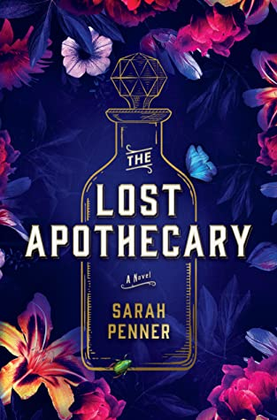

Featured Book:

The Lost Apothecary
A female apothecary secretly dispenses poisons to liberate women from the men who have wronged them—setting three lives across centuries on a dangerous collision course.Rule #1: The poison must never be used to harm another woman. Rule #2: The names of the murderer and her victim must be recorded in the apothecary’s register.